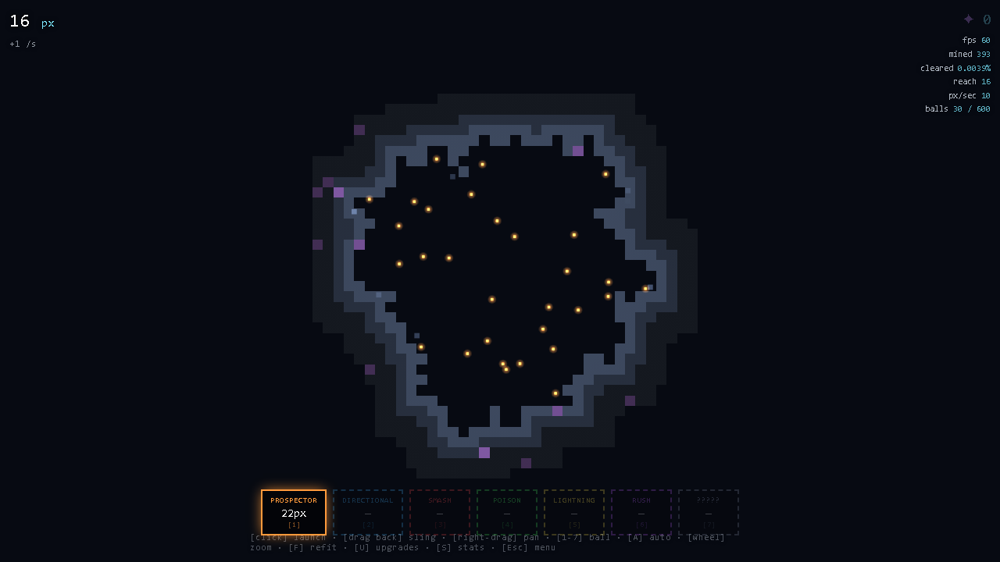
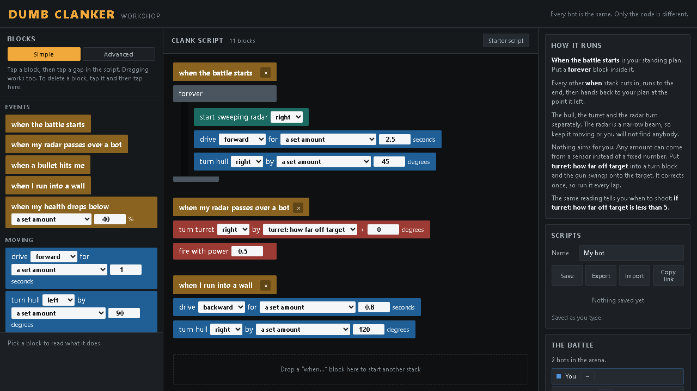
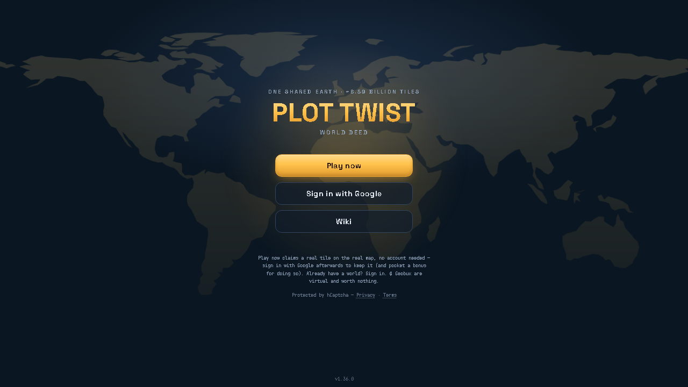
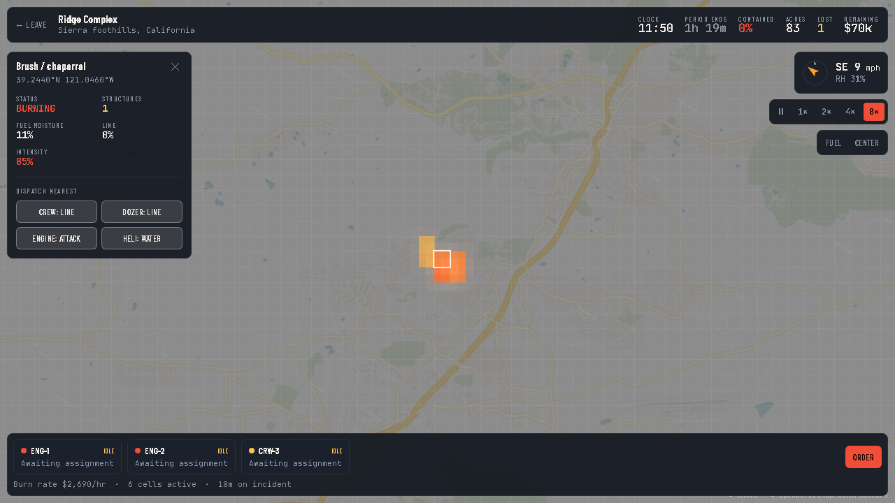
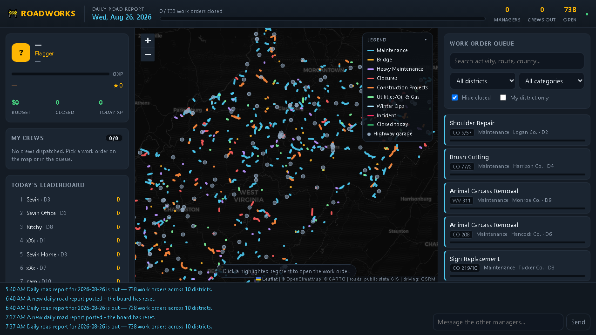
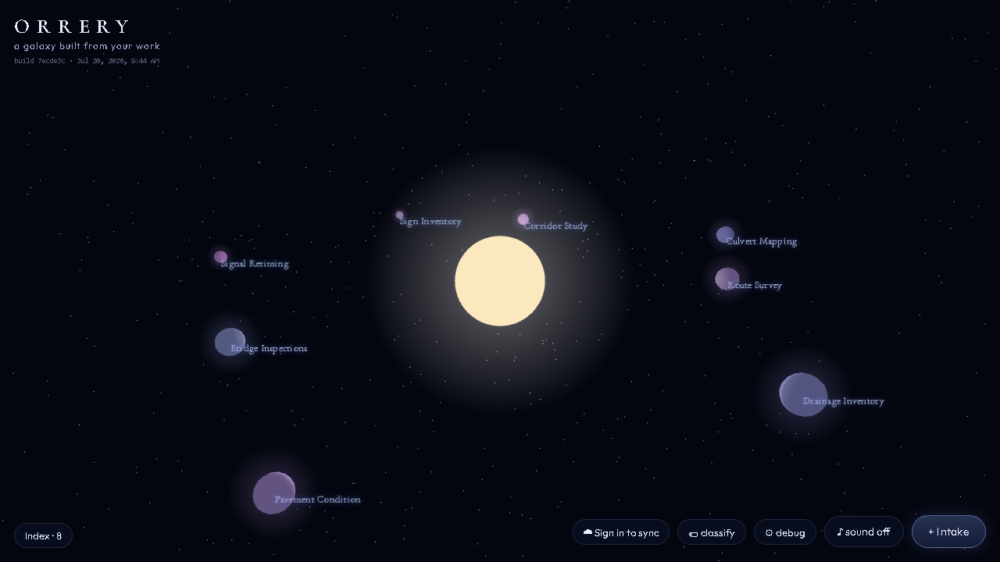

01
Orebound
Dig through a vast pixel world looking for the one golden pixel. Shoot balls into rock, they bounce, and every pixel you break pays for the next shot.
Game · one HTML file · no dependencies
Updated 3 days ago
Sevin Eldridge
This site is to show some of my hobby projects which have been immensely fun to build and play. I'm continuing to learn how to leverage AI agents for coding to aid in these passion projects, games, and experiments.
Each game or project has a page of build notes, which is where I share more detailed information.

01
Dig through a vast pixel world looking for the one golden pixel. Shoot balls into rock, they bounce, and every pixel you break pays for the next shot.
Game · one HTML file · no dependencies
Updated 3 days ago

02
A programming game. Every bot in the arena is mechanically identical, so the only thing that makes yours better is the program you wrote for it.
Game · visual scripting · Vite
Updated 6 days ago

03
A land grab on one shared Earth. Claim 300 meter tiles anywhere on the planet, build on them, and hold them against everyone else playing.
Game · multiplayer · Supabase
Updated 3 days ago

04
Wildfire containment on real terrain. Cut line, drop water and defend structures for one 90 minute operational period while the wind shifts underneath you.
Game · simulation · real land cover
Updated 22 days ago

05
A shared, real-time game about keeping the roads open. A new work board appears every morning and the whole office dispatches crews to the same one.
Game · co-op · real GIS data
Updated 15 days ago

06
A project tracker drawn as a personal galaxy. Every project is a planet, every finished task is a piece of it, and everything still open orbits as dust.
Tool · Three.js · local first
Updated last month
Two RuneLite plugins, Bond Flipper and Gielinor Deeds, and a tool that pulls land cover straight out of the Old School RuneScape game cache. They go up here once they are finished or accepted on the plugin hub.